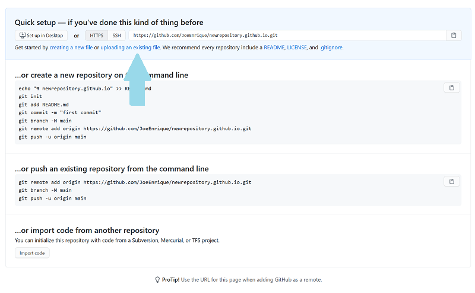

Create your page on GitHub
Get an Account
As a first step. You must have a GitHub account.
To get an account, go to https://github.com/ then click on the
button that says Sign up.

Authentication may be required to create a new account. Just complete the puzzle.
At this point, you need to provide a username, your personal email,
and a password.
The system will tell you if you can use that username. Everybody
should have a different one.

Once you have entered the information, click over the button Create account.

If you already have an account. Just click on the button that says Sing In. Then, log-in with your account.
Create an especial repository
To create a new repository, you just need to go to the top of the page on either right or left side.
On the top left side use the green button New.
On the top right side, click over the plus sing and then select new repository.

In the section Owner, you should see your username. On the Repository name section type the same username adding .github.io, should look like this: yourusername.github.io
You have the option to select Public or Private. The main difference here is Public is free, Private is not.
Then, click over the button Create repository.

Because your new repository is empty, You should see this page, where you are going to click over where say uploading an existing file

Now, just drag and drop your index.html file here.
Plus all the files that you understand are required, pictures, css files and so on.
By now, You should be already created your own html file the way you like. To show to the world your talent.
Add a title to the commit that you are about to do. Then, click over the button Commit changes.
Show your web page
Now just type your username.github.io on any browser and you will see your work visible to the world through the World Wide Web.